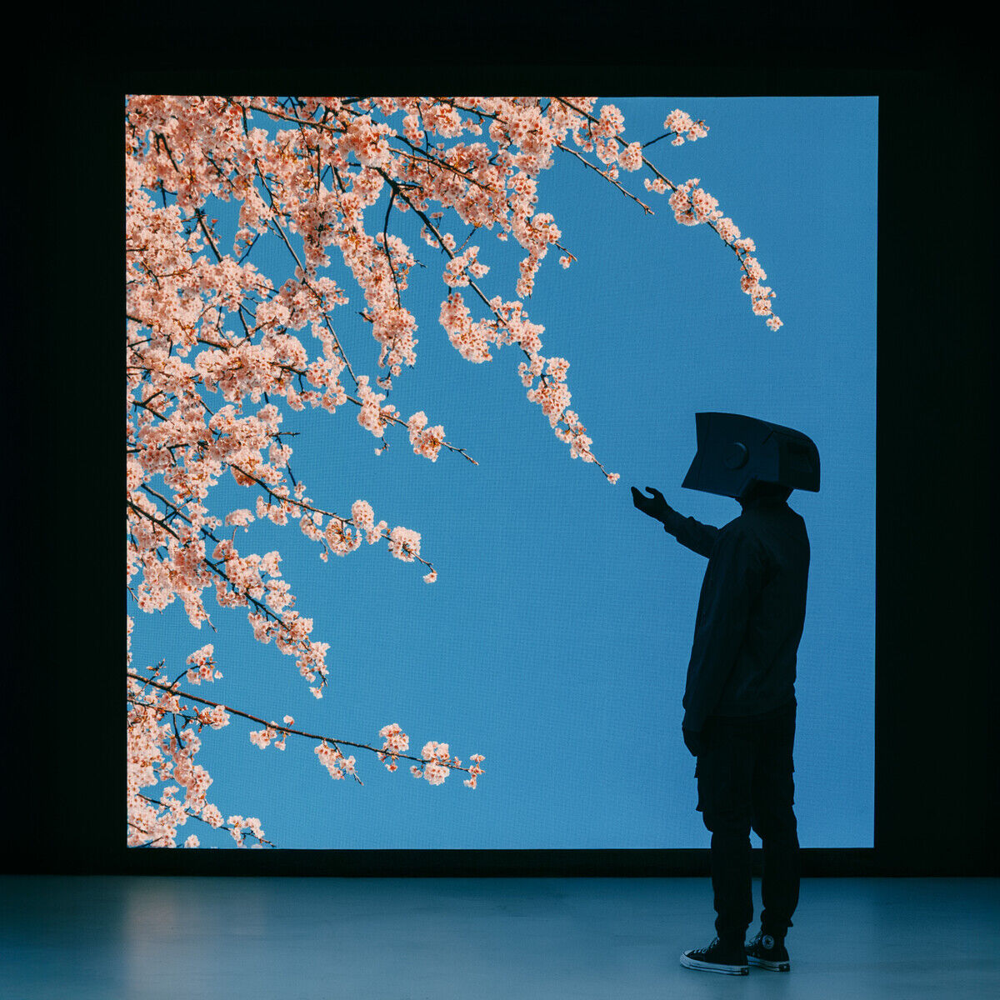

iky.exe
IKY
22 · otaku · gamer · night owl
idle in the lobby, rain on the window
Anime worlds I never wanted to leave, quests I left unfinished on purpose, and songs that sound like goodbye. A little too much melancholy, saved on every slot.
- Server time
- --:--
- Main quest
- a long RPG I never want to end
- Respawned here
- 1 times
Day–night cycle
main theme

the glowing part is the loop0:00 – 0:30
0:000:30
No disc found. Drop an .mp3 into SONG/ and set data-src on this section in index.html.
friend list
albums on repeat
player stats
- Ambience
- rain on the window, like a quiet cutscene
- Hour
- the one right after sunset, when the credits feel close
- Snack
- konbini melon bread, eaten between boss fights
- Flower
- cherry blossom, obviously: the prettiest thing that never lasts
- BGM
- the hush right before the title screen music
save slots
four save slots made of sound. load one and press play.